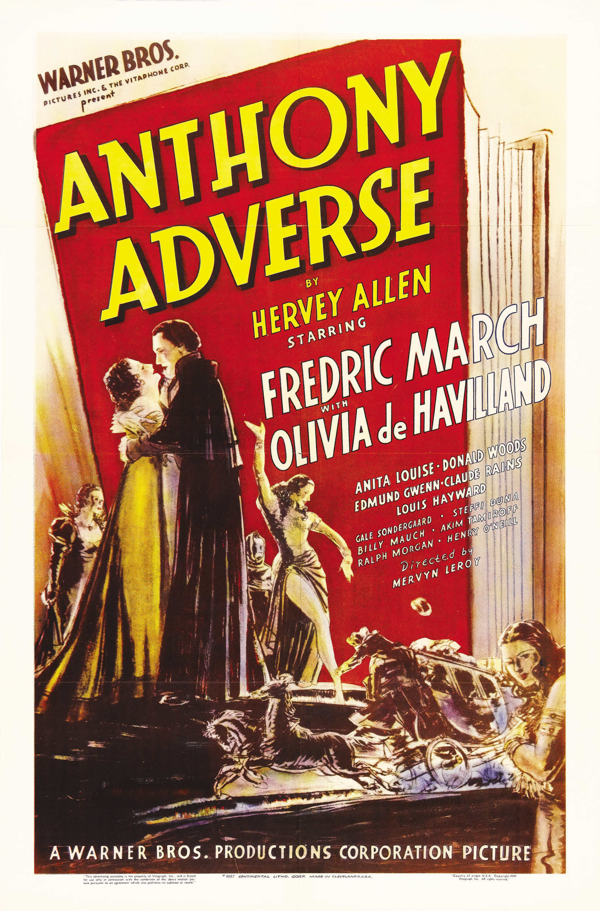

Anthony Adverse
9th Academy Awards
(Oscars 1937)
7 Nominations, 4 Awards
| Nominations | ||
|---|---|---|
| Category | Nominees | Result |
| Outstanding Production | Warner Bros. | Nominated |
| Actress in a Supporting Role | Gale Sondergaard | Won |
| Assistant Director | William Cannon | Nominated |
| Cinematography | Gaetano Gaudio | Won |
| Film Editing | Ralph Dawson | Won |
| Art Direction | Anton Grot | Nominated |
| Music (Scoring) | Erich Wolfgang Korngold and Leo Forbstein | Won |